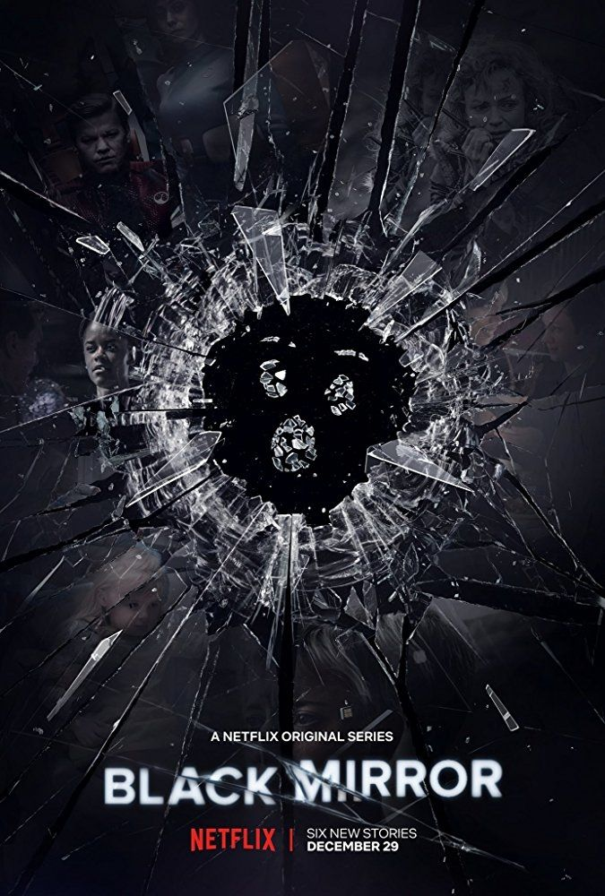
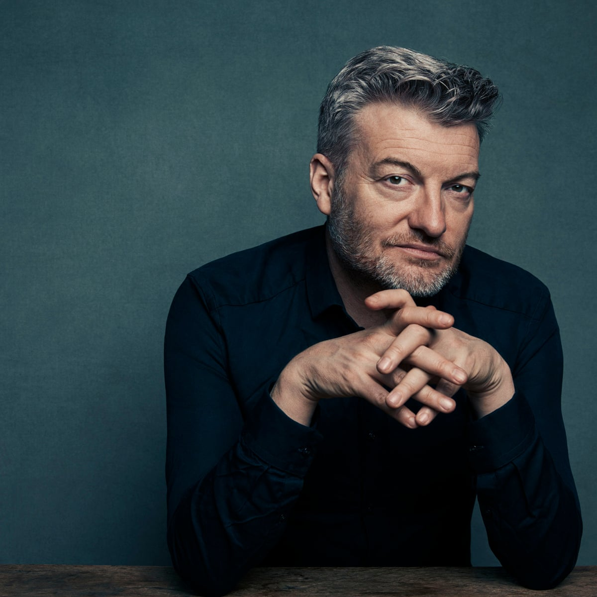
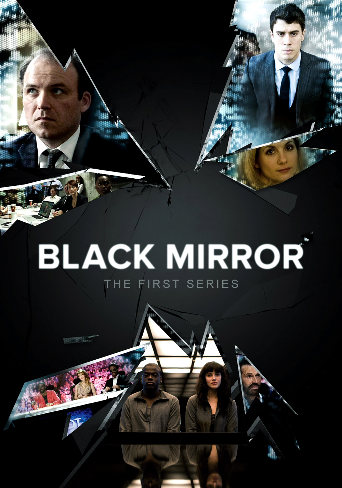
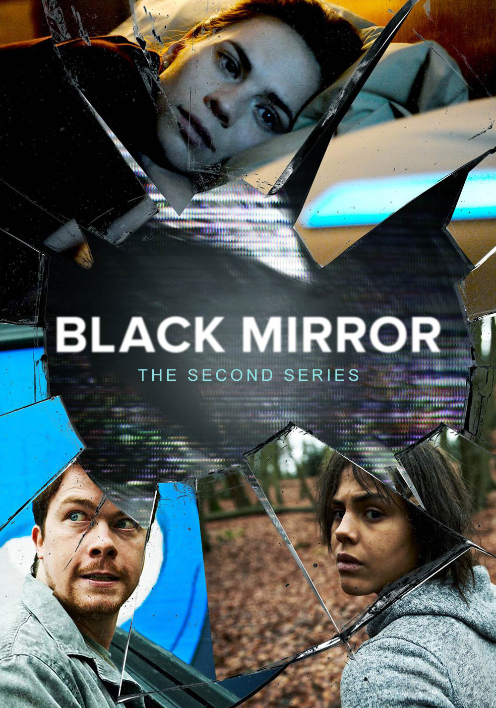
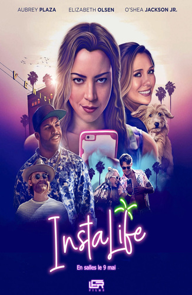
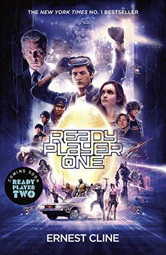
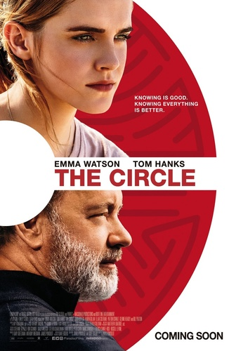

Black Mirror, une visualisation claire des menaces du Web !
Cette article vous présente les détails de la série Black Mirror, allant de la raison de sa création par Charlie Brooker à ce qui lui a valu un succès mondial.

Une création banale vers un succès mondial !
Black Mirror est une série de 5 saisons pour 22 épisodes et 1 film, créée par Charlie Brooker et diffusée pour la première fois sur la chaîne de télévision britannique “Channel 4” de 2011 à 2014.
 Elle connaît par la suite un succès mondial et est produite par Netflix en 2016.
Charlie Brooker créateur de Black Mirror
Cette série a comme thème principal la technologie dystopique aussi chaque épisode possède une histoire différente.
Cette série nous montre quelles pourraient être les effets inopinés que pourraient avoir les nouvelles technologies sur l’humanité dans un futur proche voir instantané.
Malgré le fait que cette série nous présente un avenir pour l’Homme invraisemblable, l’originalité de sa représentation du futur a été saluée.


Affiche de la saison 1 de Black Mirror
Affiche de la saison 2 de Black Mirror
Selon Charlie Brooker, chacun des épisodes de cette série possède un décor, un casting et une réalité différente,
ils représentent la manière dont vivent les humains présentement et la manière dont ils pourraient vivre dans 10 minutes s'ils commettent une erreur.
Mais quel est le but de Charlie Brooker derrière la création de cette série ?
Eh bien, cela est simple Brooker a voulu que le spectateur s’identifie à travers les situations des personnages de la série,
cela aura pour effet de provoquer une sensation de peur de la technologie et ceux pour quelle raison ?
Tout simplement, car depuis 2011, cette série n’a plus comme unique objectif le divertissement, elle nous propose aussi de réfléchir sur la
façon dont la technologie influence négativement la société et modifie son comportement, car en effet, si le spectateur peut facilement
s’identifier aux personnages de chacun des épisodes, c’est parce que les technologies utilisées dans ces épisodes existent déjà et la série nous montre
comment ces mêmes technologies pourraient évoluer dans le futur que ce soit en bien ou en mal.
Mais Brooker veut aussi nous dire à travers cette série
que bien que ce soient ces technologies qui nous influencent, ce sont quand mêmes les humains aussi appelés utilisateurs qui l’utilisent de façon honteuse
alors qu’elles pourraient nous être utiles dans bien d’autres domaines que la manipulation, l’asservissement, l’humiliation ou encore le meurtre et ces techniques
sont aussi un frein à l’évolution de ces technologies comme à celle de l’humanité.
Black Mirror Bandersnatch

Mais malgré le fait que cette série tente de nous montrer les aspects négatifs de la technologie de la manière la plus réaliste possible,
elle n’en reste pas moins une série et donc une fiction, on peut facilement y voir quelques beaucoup d’aspects qui nous font rappelés
que cette série est avant tout irréel, même si c’est la série qui représente le plus la réalité d’où son succès mondial.
Bande annonce de le saison 1 de Black Mirror
Galerie
-

Instalife
-

Ready Player One
-

The Circle